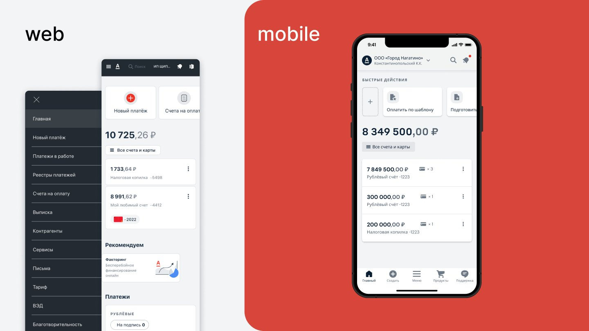
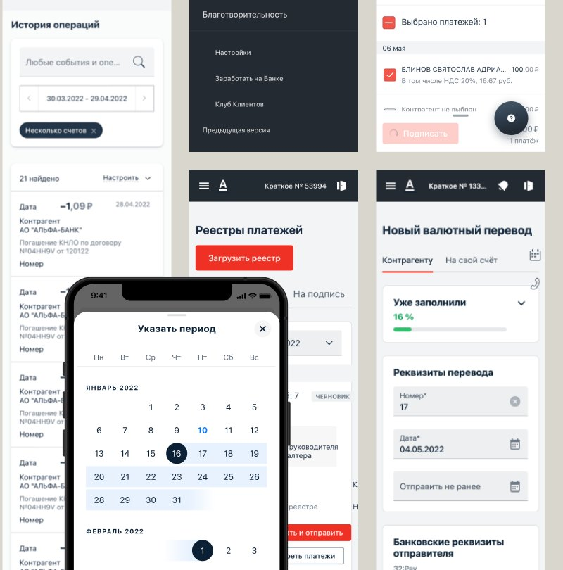
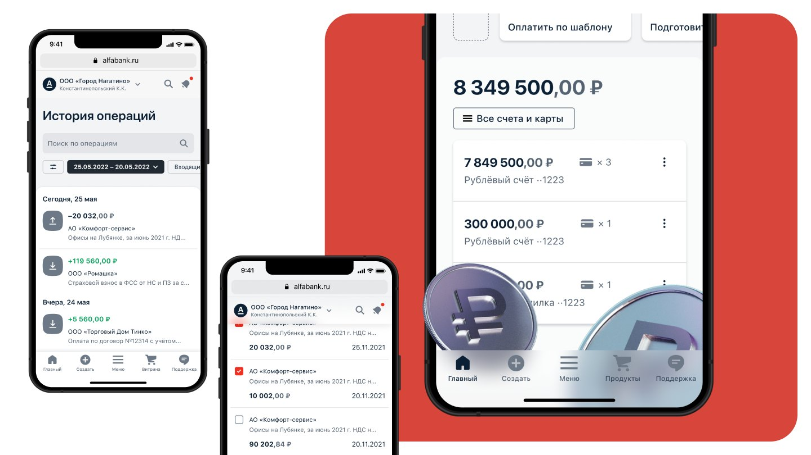
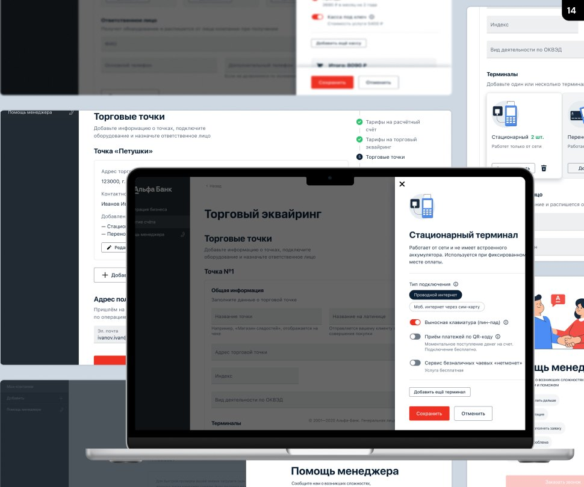
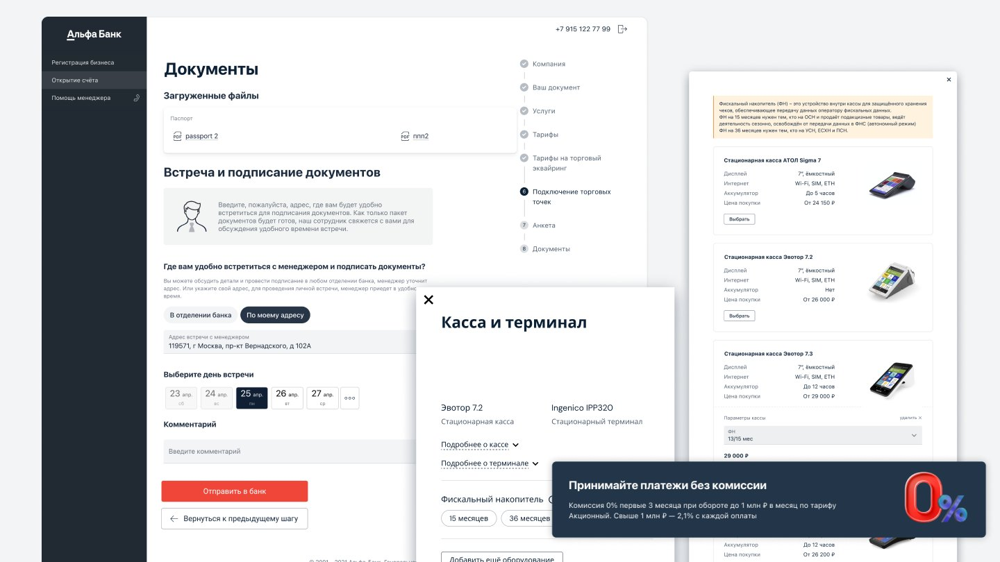
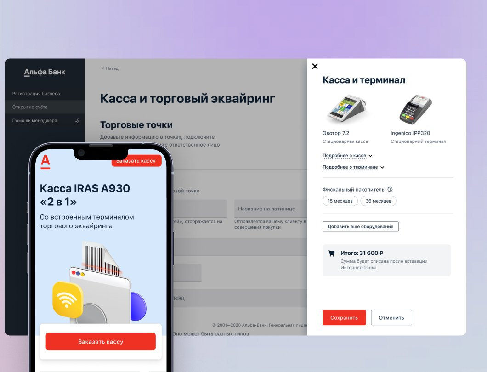
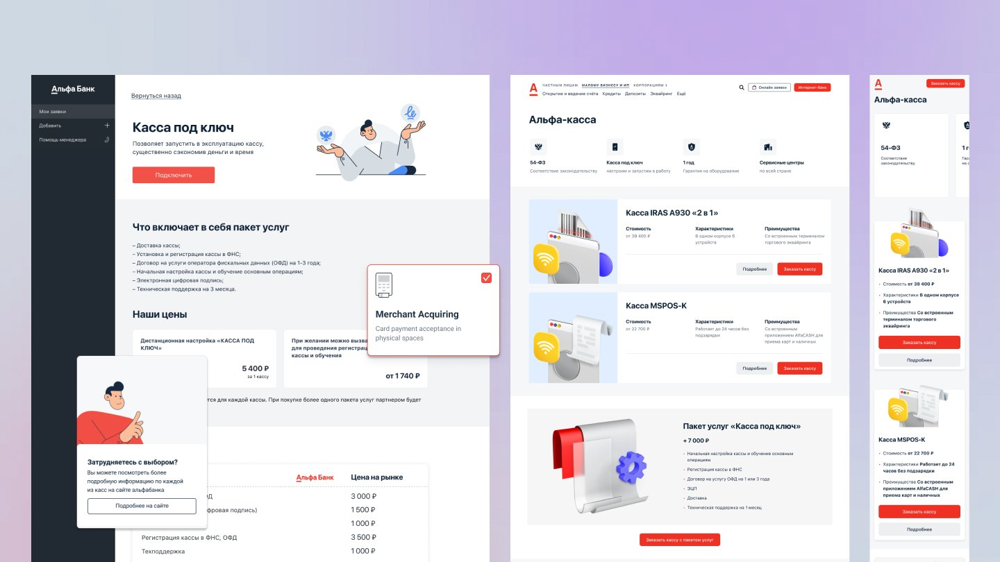
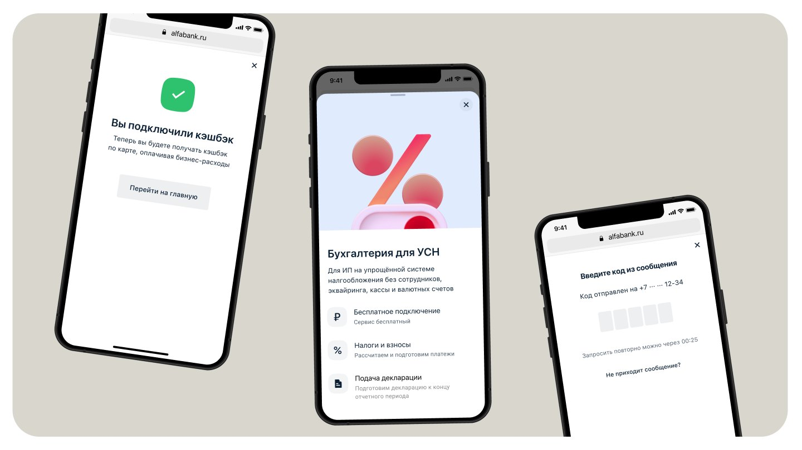

Alfa-Bank: Business Lines
A family of products for Alfa-Bank’s business clients and the employees who serve them: the internet bank on web and mobile, cash desk and acquiring onboarding, online accounting for sole traders, a factoring back office, sales tools and internal training.

Cash desk and acquiring, connected online
users went through the flow on the web
users on iOS
users on Android
Eleven products, one business line
Business Lines is everything an entrepreneur uses at Alfa-Bank — and everything the employees who serve them use. I worked across several teams at once, so this case brings several streams together rather than a single product.
Internet bank
Home, payments, registries, statements and currency transfers — on web and mobile.
POS & acquiring
Online onboarding of retail points, terminals and a turnkey cash desk.
Accounting for sole traders
Taxes, insurance contributions, the tax return and e-signature issuance.
Services showcase
The product and service catalogue inside the internet bank, banners and partner bonuses.
Alfa Factor
The factoring back office: limits and sub-limits, agent and general contracts.
SFA dashboard
The sales employee’s desktop: tasks, funnel, motivation and ratings.
Digital profile
Gosuslugi account confirmation, documents, certificates and statements.
Alfa-Mobile features
Offers showcase, favourite promotions, video content and code-word change.
Academy
The training request service and its A/B test with employees.
Business Analysis Faculty
Identity and materials for the internal A × SFA course.
Design system
A modified component library for a high-load SAP front end.
The home screen for a business
The home screen is where a company or sole trader registers the business and tracks its activity: balances across all accounts and cards, the tax savings account, quick actions and payments waiting for a signature.
After the analysis we built a high-load SAP system. The interface runs on a modified component library.


Retail points, terminals and online accounting
A personal account for legal entities: creating and managing retail points, connecting payment terminals and choosing the best service package and acquiring plan — without visiting a branch.

The onboarding flow
- Company
- Your document
- Services
- Tariffs
- Acquiring tariffs
- Retail points
- Questionnaire
- Documents & meeting



Accounting for sole traders on the simplified tax system
A service for sole traders without employees, acquiring, a cash desk or currency accounts: the bank calculates taxes and contributions, prepares the payments and files the tax return at the end of the period. Connecting is free.

Back office, sales and mobile features
The other half of Business Lines: the systems bank employees work in, plus standalone features for clients.
Factoring back office
Dense working screens for operations staff: everything about limits and contracts with debtors.
- Registries of limit and sub-limit groups with filters
- Group composition, used limits and change history
- Agent contract: commission waiting period, monthly commission, rates
- General contract: debtors, tariff plan, accounts and rates
Sales employee dashboard
A set of widgets employees build their working day from.
- Today’s tasks, “My day”, sales funnel and favourites
- Mortgage status report and bucket status
- A unified motivation widget, ScoreCard and client ratings
- Best branch results, “Submit an idea”, onboarding and notifications
New services showcase
A refresh of the “All services and products” catalogue (November 2021) with layouts for 1680, 1024, 768 and 375 px.
- Popular services and a catalogue by category
- Promo banners on the showcase
- Super services and partner bonuses
Mobile app features
Standalone tasks for iOS and Android, reviewed on both platforms.
- Offers showcase: loading, catalogue, collections and promo details
- Favourite promotions and video content
- Code-word change
Profile via Gosuslugi
The client confirms their Gosuslugi account and the bank pulls in their documents automatically.
- Account confirmation and the confirmation integration
- Documents and the new profile
- Certificates and statements
Business Analysis Faculty
An internal course for analysts: identity, presentation templates and lesson covers.
- Full-colour and line logo versions, a pattern and textures
- Lessons: Scrum, Kanban, “5 whys”, the system matrix
- Effective communication and business games
Academy: A/B testing the request service
The goal: find the strongest hypothesis and the problems people hit in the interface. Active users of the Academy services got one task: create a request for external training and send it for approval.
Tiles + cancel on hover
Picking the request type from illustrated tiles is easier, and the request can be cancelled straight away.
Select + cancel button
Picking the request type from a select list is easier, and cancelling appears only after creation.
| Metric | Tiles + hover | Select + button |
|---|---|---|
| Total sessions | 8 | 4 |
| Completed sessions | 6 | 1 |
| Dropped out | 4 | 3 |
| Average time on task | 1 min 34.7 s | 23.6 s |
| Task success | 75% | 25% |
Few steps to the goal — a couple of clicks with no extra windows or pages.
It wasn’t obvious the request was prefilled; the select variant lacked information about the training itself.
Add the training date, format and city, and make the request window wider.
Want to learn more about this project or discuss a collaboration?
Get in touchLet's stay in touch!
I'm always open to new projects, long-term collaborations, and exciting ideas. Feel free to reach out through any channel.